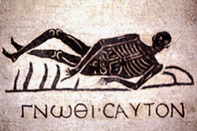

Plutarch
tells us that this saying was inscribed upon the Delphic
oracle. This is also mentioned by Plato
in the Protagoraswhere it is cited as an example of laconic philosophical
brevity.
gnw~qi seauto/n
Know yourself.

As this mosaic in the Terme Museum in
Rome shows, this saying, also originally from the oracle at Delphi,
was a favorite in the ancient world. There is a discussion of
its meaning in Plato's Charmides.